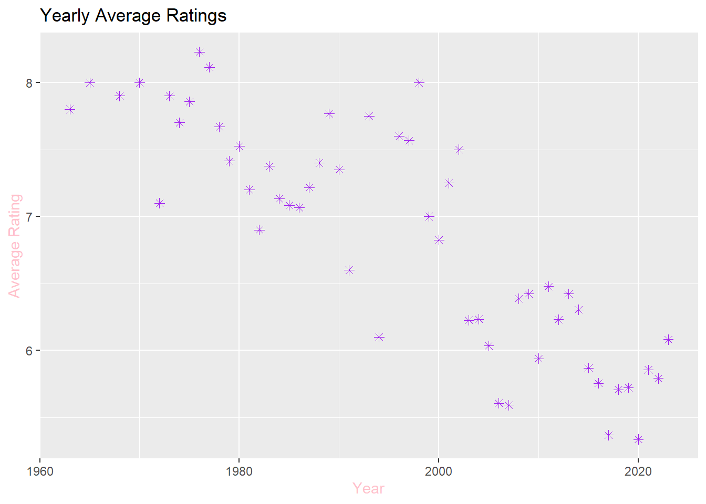
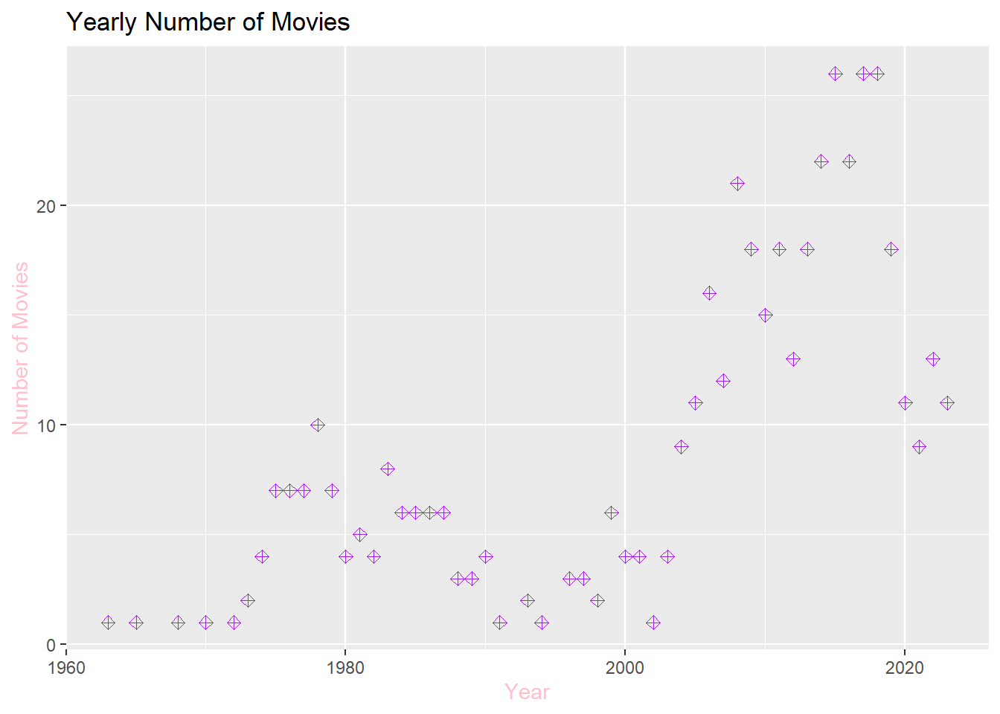
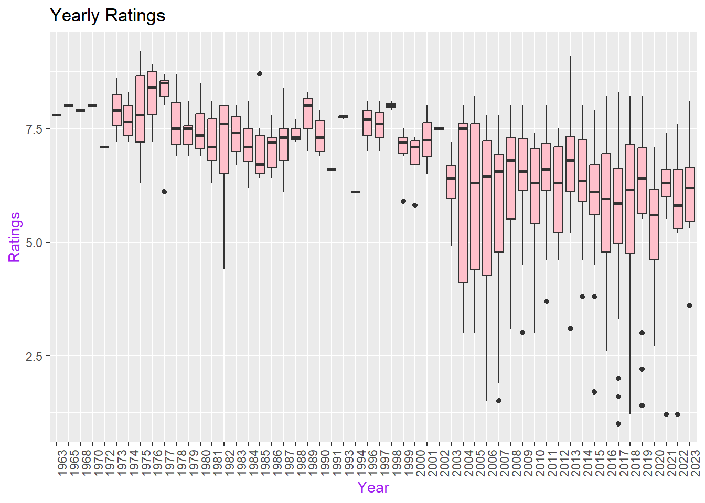
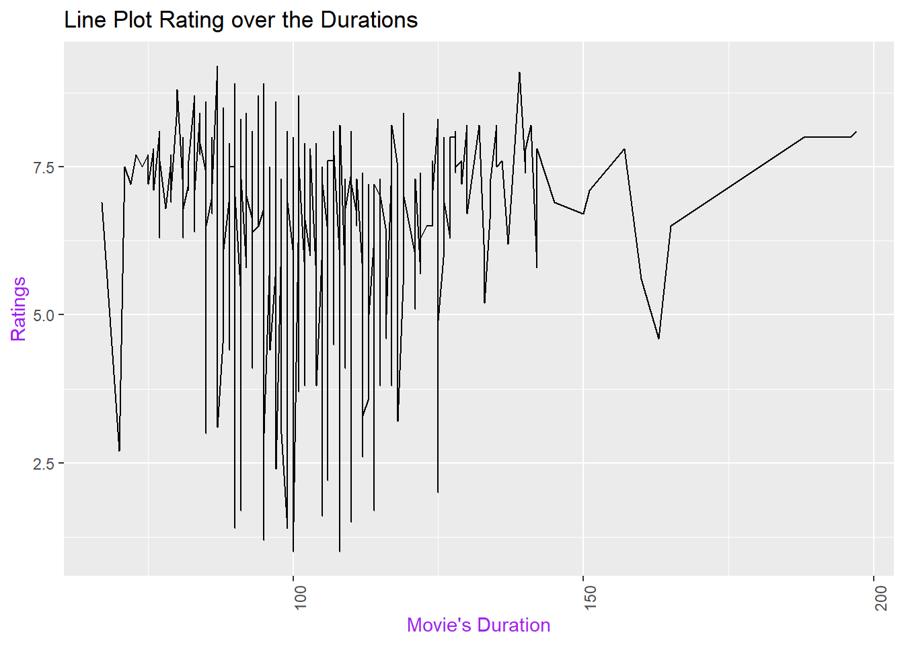

1. Using the filters on https://m.imdb.com/search, list all Turkish movies with more than 2500 reviews, and save the URLs.
Generating URL for the initial search with criteria like “Movie” type, “Turkey” as the country, and a minimum of “2500” votes, incorporating “&count=250” to extend the list. Create two additional URLs with release date filters for “01/01/2010-31/12/2023” and “……-31/12/2009.”
# Import necessary packageslibrary(tidyverse)
Warning: package 'tidyverse' was built under R version 4.3.2
Warning: package 'ggplot2' was built under R version 4.3.2
Warning: package 'readr' was built under R version 4.3.2
Warning: package 'dplyr' was built under R version 4.3.2
Warning: package 'stringr' was built under R version 4.3.2
── Attaching core tidyverse packages ──────────────────────── tidyverse 2.0.0 ──
✔ dplyr 1.1.3 ✔ readr 2.1.4
✔ forcats 1.0.0 ✔ stringr 1.5.1
✔ ggplot2 3.4.4 ✔ tibble 3.2.1
✔ lubridate 1.9.3 ✔ tidyr 1.3.0
✔ purrr 1.0.2
── Conflicts ────────────────────────────────────────── tidyverse_conflicts() ──
✖ dplyr::filter() masks stats::filter()
✖ dplyr::lag() masks stats::lag()
ℹ Use the conflicted package (<http://conflicted.r-lib.org/>) to force all conflicts to become errors
library(stringr)library(rvest)
Warning: package 'rvest' was built under R version 4.3.2
Attaching package: 'rvest'
The following object is masked from 'package:readr':
guess_encoding
library(ggplot2)library(knitr)# Generate the Urls vector url_2010_2023 <-"https://www.imdb.com/search/title/?title_type=feature&release_date=2010-01-01,2023-12-31&num_votes=2500,&country_of_origin=TR&count=250"url_before_2010 <-"https://www.imdb.com/search/title/?title_type=feature&release_date=,2009-12-31&num_votes=2500,&country_of_origin=TR&count=250"url_vector <-c(url_2010_2023, url_before_2010)
2. Start web scrapping to create a Data Frame with columns: Title, Year, Duration,Rating, Votes
library(tidyverse)library(stringr)library(rvest)url_2010_2023 <-"https://www.imdb.com/search/title/?title_type=feature&release_date=2010-01-01,2023-12-31&num_votes=2500,&country_of_origin=TR&count=250"url_before_2010 <-"https://www.imdb.com/search/title/?title_type=feature&release_date=,2009-12-31&num_votes=2500,&country_of_origin=TR&count=250"url_vector <-c(url_2010_2023, url_before_2010)# Generate vectors for title, year,duration, rating, votes variables titles <-c()years <-c()durations <-c()ratings <-c()votes <-c()# Use For Loop for reading the HTML content of IBMD website because of having two dimensional vector of Urlsfor (url in url_vector) { page <-read_html(url)# Web scrapping to create a Data Frame with columns: Title, Year, Duration, Rating, Votes title_names <- page %>%html_nodes('.ipc-title__text') %>%html_text() title_names <-tail(head(title_names, -1), -1) title_names <-str_split(title_names, " ", n =2) title_names <-unlist(lapply(title_names, function(x) {x[2]})) year <- page %>%html_nodes(".sc-43986a27-7.dBkaPT.dli-title-metadata") %>%html_text() %>%substr(1, 4) %>%as.numeric() duration <- page %>%html_nodes(".sc-43986a27-7.dBkaPT.dli-title-metadata") %>%html_text()# Extract only the hour part from the data containing both time and date, divide the data by 10 and take the remainder hour <-str_extract(duration, "\\d+h") %>%str_replace("h", "") %>%as.numeric() %%10 total_duration <- hour *60+str_extract(duration, "\\d+m") %>%str_replace("m", "") %>%as.numeric() rating <- page %>%html_nodes(".ipc-rating-star.ipc-rating-star--base.ipc-rating-star--imdb.ratingGroup--imdb-rating") %>%html_text() %>%substr(1, 3) %>%as.numeric() vote <- page %>%html_node(".sc-53c98e73-0.kRnqtn") %>%html_text() %>%parse_number()# Adding URLs to the vectors created initially is done using the append function titles <-append(titles, title_names) years <-append(years, year) durations <-append(durations, total_duration) ratings <-append(ratings, rating) votes <-append(votes, vote)}# Generate Data Frame with columns: Title, Year, Duration, Rating, Votesmovies <-data.frame(titles, years, durations, ratings, votes)print(head(movies))
titles years durations ratings votes
1 Kuru Otlar Üstüne 2023 197 8.1 5063
2 Istanbul Için Son Çagri 2023 91 5.3 35018
3 Yedinci Kogustaki Mucize 2019 132 8.2 5063
4 Ölümlü Dünya 2 2023 117 7.5 35018
5 Bihter 2023 113 3.6 5063
6 Ölümlü Dünya 2018 107 7.6 35018
3.Conduct an Exploratory Data Analysis on your data set, create visualizations to address the following questions, and provide insightful facts about the Turkish movie industry.
a. Arrange your data frame in descending order by Rating. Present the top 5 and bottom 5 movies based on user ratings. Have you watched any of these movies? Do you agree or disagree with their current IMDb Ratings?
# Descending order by rating of moviesmovies_desc_order <- movies %>%arrange(desc(ratings))# The top 5 of moviesprint(head(movies_desc_order,n=5))
# The bottom 5 of moviesprint(tail(movies_desc_order,n=5))
titles years durations ratings votes
466 Cumali Ceber 2 2018 100 1.2 5063
467 Müjde 2022 NA 1.2 5063
468 15/07 Safak Vakti 2021 95 1.2 5063
469 Cumali Ceber: Allah Seni Alsin 2017 100 1.0 5063
470 Reis 2017 108 1.0 35018
I’m not surprised to see that none of the ‘Hababam Sinifi’ films made it to the top. As the data frame indicates, being a film from 1975, it’s remarkable that I, born in 2000, still thoroughly enjoy watching it. Looking at the top 5 film data, it becomes apparent that people lean towards comedy genres, which holds true for my generation as well.
b. Check the ratings of 2-3 of your favorite movies. What are their standings?
fav_movies <-c("Babam ve Oglum","Selvi Boylum Al Yazmalim","G.O.R.A.")# Check the years, rating and votes for my favorite moviesfav_movies <- movies %>%filter (titles %in% fav_movies) %>%select(-durations) %>%arrange(desc(ratings))print(fav_movies)
titles years ratings votes
1 Selvi Boylum Al Yazmalim 1977 8.5 5063
2 Babam ve Oglum 2005 8.2 35018
3 G.O.R.A. 2004 8.0 35018
c. Considering that audience rating is a crucial indicator of movie quality, what can you infer about the average ratings of Turkish movies over the years? Calculate yearly rating averages and plot them as a scatter plot. Hint: Use functions like group_by(), summarise(), mean(), ggplot(), geom_point(). Similarly, plot the number of movies over the years. You might observe that using yearly averages could be misleading due to the increasing number of movies each year. As an alternative solution, plot box plots of ratings over the years (each year having a box plot showing statistics about the ratings of movies in that year). What insights do you gather from the box plot?
# Import necessary packageslibrary(tidyverse)library(ggplot2)# Scatter plot of avaerage ratings over the yearsyearly_avg <- movies %>%group_by(years) %>%summarize(yearly_rating_averages =mean(ratings))yearly_avg_plot <-ggplot(yearly_avg, aes(x = years, y = yearly_rating_averages)) +geom_point(color ="purple",shape =8, size =2) +labs(title ="Yearly Average Ratings",x ="Year",y ="Average Rating") +theme_gray() +theme(axis.title =element_text(color ="pink"))print(yearly_avg_plot)

# Scatter plot number of movies over the yearsnumber_of_movies <- movies %>%group_by(years) %>%summarize(number_movies =n())number_of_movies_plot <-ggplot(number_of_movies, aes(x = years, y = number_movies)) +geom_point(color ="purple",shape =9, size =2) +labs(x ="Year", y ="Number of Movies") +ggtitle("Yearly Number of Movies")+theme_gray() +theme(axis.title =element_text(color ="pink"))print(number_of_movies_plot)

# Box plots of ratings over the yearsyearly_avg_box <-ggplot(movies, aes(x =as.factor(years), y = ratings)) +geom_boxplot(fill ="pink") +labs(x ="Year",y ="Ratings")+ggtitle("Yearly Ratings")+theme_gray() +theme(axis.title =element_text(color ="purple")) +theme(axis.text.x =element_text(angle =90, hjust=1))print(yearly_avg_box)

The observed decline in ratings over the years might suggest a decrease in film quality; however, it is essential to acknowledge the increasing number of films since 1969, indicating a heightened competitive landscape. This dynamic underscores the importance of considering not only the quality of individual films but also the evolving industry context.
d. Do you believe there is a relationship between the number of votes a movie received and its rating? Investigate the correlation between Votes and Ratings.
# Correlation between ratings and votescorrelation <-cor(movies$ratings, movies$votes)# Print the correlation coefficientcat("Correlation between ratings and votes:", correlation, "\n")
Correlation between ratings and votes: 0.0332948
The correlation coefficient you’ve calculated (0.0332948) is quite close to zero. In statistical terms, this indicates a very weak correlation between ratings and votes. A correlation close to zero suggests that there isn’t a strong linear relationship between these two variables.
In practical terms, this means that the number of votes a movie receives is not strongly associated with its rating. The correlation does not imply causation, so while there may be a weak correlation, it doesn’t necessarily mean that more votes directly cause higher or lower ratings, or vice versa. Other factors might influence both ratings and votes independently.
e. Do you believe there is a relationship between a movie???s duration and its rating? Investigate the correlation between Duration and Ratings.
movies <-na.omit(movies)# Correlation between ratings and movie's durationcorrelation <-cor(movies$ratings, movies$durations)cat("Correlation between ratings and movie's duration:", correlation, "\n")
Correlation between ratings and movie's duration: 0.00234258
# Also we can check the line plot for correlationcorrelation_plot <-ggplot(movies, aes(x = durations, y = ratings)) +geom_line() +labs(x ="Movie's Duration",y ="Ratings") +ggtitle("Line Plot Rating over the Durations") +theme_gray() +theme(axis.title =element_text(color ="purple"),axis.text.x =element_text(angle =90))print(correlation_plot)

The correlation coefficient of 0.00234258 between movie ratings and duration is highly negligible, indicating an exceedingly weak correlation in statistical terms. A correlation near zero implies the absence of a robust linear relationship between these two variables.
4. Repeat steps 1 and 2 for a different advanced IMDb search. This time, find Turkish movies that are in the top 1000 movies on IMDb. Perform similar scraping to create another DataFrame with only the columns: Title, Year.
library(tidyverse)library(stringr)library(rvest)library(ggplot2)url_top_turkish_movies <-"https://www.imdb.com/search/title/?title_type=feature&sort=num_votes,desc&groups=top_1000&country_of_origin=TR"# Generate the empty vector for titles and yearstitles_top <-c()years_top <-c()# Reading the HTML content of IBMD websitepage_2=read_html(url_top_turkish_movies)title_names <- page_2 %>%html_nodes('.ipc-title__text')title_names <-html_text(title_names)title_names <-tail(head(title_names,-1),-1)title_names <-str_split(title_names, " ", n=2)title_names <-unlist(lapply(title_names, function(x) {x[2]}))year <- page_2 %>%html_nodes(".sc-43986a27-7.dBkaPT.dli-title-metadata") %>%html_text() %>%substr(1, 4) %>%as.numeric(year)titles_top <-append(titles_top, title_names)years_top <-append(years_top, year)movies_top <-data.frame(titles_top, years_top)print(movies_top)
titles_top years_top
1 Babam ve Oglum 2005
2 Eskiya 1996
3 G.O.R.A. 2004
4 Kis Uykusu 2014
5 Yedinci Kogustaki Mucize 2019
6 Bir Zamanlar Anadolu'da 2011
7 Ayla: The Daughter of War 2017
8 Vizontele 2001
9 Nefes: Vatan Sagolsun 2009
10 Her Sey Çok Güzel Olacak 1998
11 Ahlat Agaci 2018
# Appropriate join operation to fill in the duration, rating, and votes attributes of the new data frameturkish_movies_in_top1000 <-merge(x = movies_top, y = movies,by.x =c("titles_top", "years_top"),by.y =c("titles", "years"),all.x =TRUE)print(turkish_movies_in_top1000)
titles_top years_top durations ratings votes
1 Ahlat Agaci 2018 188 8.0 35018
2 Ayla: The Daughter of War 2017 125 8.3 35018
3 Babam ve Oglum 2005 108 8.2 35018
4 Bir Zamanlar Anadolu'da 2011 157 7.8 5063
5 Eskiya 1996 128 8.1 35018
6 G.O.R.A. 2004 127 8.0 35018
7 Her Sey Çok Güzel Olacak 1998 107 8.1 35018
8 Kis Uykusu 2014 196 8.0 5063
9 Nefes: Vatan Sagolsun 2009 128 8.0 5063
10 Vizontele 2001 110 8.0 5063
11 Yedinci Kogustaki Mucize 2019 132 8.2 5063
# Order the 11 movies based on their Rank. Are these the same first high-rated 11movies in your initial data frame?movies_top_desc_order <- turkish_movies_in_top1000 %>%arrange(desc(ratings))movies_desc_order_11 <-head(movies_desc_order, n=11)for (i in1:11) { result <-ifelse(movies_desc_order_11$titles[i] == movies_top_desc_order$titles_top[i], "same order!!!", "not same order!!!")print(result)}
[1] "not same order!!!"
[1] "not same order!!!"
[1] "not same order!!!"
[1] "not same order!!!"
[1] "not same order!!!"
[1] "not same order!!!"
[1] "not same order!!!"
[1] "not same order!!!"
[1] "not same order!!!"
[1] "not same order!!!"
[1] "not same order!!!"
IMDb may focus not only on ranking scores but also on factors such as vote counts, critic evaluations, or other criteria when determining its top 1000 movie list. In this case, differences in rankings could stem from these varying criteria.